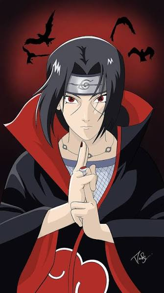

Itachi Uchiha was a child prodigy who became one of the youngest ANBU members in Konoha's history. To prevent a civil war between the Uchiha Clan and the village, he accepted a secret mission to eliminate his own clan. Although he was viewed as a criminal for years, he secretly sacrificed everything to protect his village and his younger brother Sasuke.
Itachi dreamed of a peaceful world where his village and family could live without conflict and war.
"People live their lives bound by what they accept as correct and true."